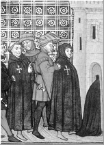
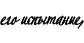

|
С 1245 по 1307
 Отсутствие достоверных записей не позволяет нам узнать точную дату и место рождения Жака де Моле (Jacques de Molay). Тем не менее, данные, полученные в результате исследования судебных протоколов и архивов Европейских королевств, позволяют предположить, что де Моле родился примерно в 1245 году, в Верхнем Саоне (Haute Saone) (провинция Бургундия, позже – часть Священной Римской Империи).
Отсутствие достоверных записей не позволяет нам узнать точную дату и место рождения Жака де Моле (Jacques de Molay). Тем не менее, данные, полученные в результате исследования судебных протоколов и архивов Европейских королевств, позволяют предположить, что де Моле родился примерно в 1245 году, в Верхнем Саоне (Haute Saone) (провинция Бургундия, позже – часть Священной Римской Империи).
В 1265 году в Боне (Beaune) де Моле был принят в Орден Эмбером де Перо(Humbert de Pairaud), смотрителем во Франции и Англии. На церемонии присутствовал французский магистр Амори де Ла Рош (Amaury de la Roche)
Около 1270 года де Моле отправился на восток. Точно обозначить его занятия в тот период не представляется возможным. Доподлинно неизвестно, был ли он в числе выживших в Акре (Acre), которым удалось сбежать на Кипр вместе с Тибо Годеном (Thibaud Gaudin), на тот момент - Великим Магистром Ордена, однако осенью 1291 года он принимал участие в создании отделения Ордена на этом острове. Еще до наступления апреля 1292, вскоре после кончины Годена, его избирают великим магистром Ордена. С этого момента де Моле занимается неотложными делами, формирует правительство и организует оборону как для Кипра, так и для королевства Малой Армении, последнего франкского владения на Востоке.
Весной 1293 года де Моле отправился в долгое путешествие по Европе, во время которого он устранил многие препятствия, мешавшие деятельности Ордена. Наиболее важным моментом было то, что он добился (как от правителей Запада, так и от Церкви) поддержки в защите последних христианских государств на Востоке. Во время этой поездки де Моле укрепил отношения с некоторыми монархами, такими как Эдвард I Английский (Edward I of England), Джеймс II Арагонский (James II of Aragon) и Папа Бонифаций VIII. Он возвращается на Кипр осенью 1296 года, чтобы решить проблемы, возникшие в результате того, что на престол взошел король Генрих II (King Henry II).
В 1298, после падения Рош-Гийома (Roche-Guillaume), де Моле организует экспедицию в Силицию (Cilicia), последнего оплота королевства. К несчастью, войска христиан не сумели воспользоваться плодами победы персидского хана Газы (Ghazan Khan) над египетскими мамелюками в Оме (Homs) в декабре 1299.
В 1300 году де Моле продолжил укреплять остров Руад (Arwad) у побережья Тортозы (Tartous), имея целью сделать из него опорный пункт для совместных действий с монголами. Однако монголам, увязшим в междоусобных войнах, так и не удалось стать союзниками христиан в борьбе с мамелюками. В сентябре 1302 года тамплиеры были сметены с острова Руад мамлюками. Таким образом, де Моле отбросил всякие надежды на объединение с монголами, которые, как выяснилось, изначально были обречены на неудачу.
В 1305 году избранный незадолго до того Папа Климент V (Clement V) потребовал на Соборе от магистров религиозных орденов подготовить новый Крестовый Поход. Частью этого плана было объединения орденов. 6 июня 1306 года Климент V официально вызвал руководителей орденов в Пуатье (Poitiers), но, по причине плохого самочувствия Папы, де Моле получил аудиенцию лишь в мае 1307 года. Де Моле, как и прежде, решительно выступал против идеи объединения различных религиозных орденов. Занятая им позиция стала одним из главных событий, определивших дальнейшую судьбу тамплиеров. Всё началось с того, что король Франции был обижен подобным отказом, так как это противоречило его собственным амбициям, к тому же это осложнило переговоры между Климентом V и Филиппом IV Красивым, пытавшимися избавиться от тяжёлого наследия Бонифация VIII, и затруднило организацию нового Крестового похода. Во время поездки на запад де Моле также обнаружил, что всюду распространяются слухи, порочащие тамплиеров. Филипп Красивый и его советники немедленно воспользовались этим и составили план избавления от непокорного ордена. 24 июня де Моле встретился в Париже с Филиппом Красивым для обсуждения обвинений, выдвинутых против Ордена. Обнадёженной этой встречей, де Моле возвращается в Пуатье и обращается к Папе с просьбой начать расследование, которое раз и навсегда снимет с тамплиеров все подозрения. 24 августа Климент V пообещал де Моле организовать комиссию по расследованию. Однако, Филипп Красивый решил вмешаться и забрать дело из рук Папы Климента. 14 сентября с помощью Ногаре Филипп Красивый даёт своим бальям и сенешалям секретные предписания: арестовать всех тамплиеров Королевства и конфисковать их собственность.
13 октября 1307 года: арест тамплиеров
[Наверх]
Операцией руководил Гийом де Ногаре (Guillaume de Nogaret), арестовавший при поддержке солдат 140 тамплиеров – всех, кто находился в Париже. Уроженец Лангедока (Languedoc) де Ногаре был королевским правоведом. Прямо накануне арестов Великий магистр де Моле участвовал в процессии на похоронах принцессы Екатерины, Императрицы Константинопольской, жены графа Валуа.
После арестов рыцарей и их Великого магистра, судьба всего ордена тамплиеров оказалась тесно переплетена с судьбой их прославленного предводителя. Общеизвестно, что Орден был основан в 1118 году французскими крестоносцами с единственной целью: защита паломников на пути в святые земли. Благодаря исключительному бесстрашию рыцарей, их доблести и чистоте их помыслов за Орденом закрепилась очень хорошая репутация. Укрепив своё положение во время Собора в Труа (the Council of Troyes) (14 января 1128), в течение последующих двух столетий тамплиеры постоянно получали привилегии от пап и добились признания королей, знати и простого народа. В результате своих деяний тамплиеры стали самым богатым и влиятельным христианским орденом.
Рыцари Храма своим высоким положением подчас вызывали зависть даже у монархов. Очевидно, что никто не может обладать такой мудростью, чтобы избежать или свести на нет любую ревность и обиды. К несчастью тамплиеров, у короля Франции были причины ждать, чтобы они оступились: в первую очередь из-за нехватки средств в королевской казне, что и вынудило его позариться на несметные сокровища Ордена.
Сразу после того как Великий Магистр и его братья-рыцари были арестованы в парижском Храме, король захватил дворец и лишил их имущества и богатства. Подобную процедуру король проделал и с остальными рыцарями во время массовых арестов по всей Франции. В соответствии с немедленно вынесенным Инквизицией обвинением, тамплиеры стали подвергаться пыткам; в сердцах же тех, кто не был им подвергнут cразу, поселился страх. Практически в каждом случае рыцарей заставляли сознаваться в гнусных преступлениях против естества, религии и морали; полученные признания оправдывали любые средства их получения, поэтому инквизиторы не гнушались ничем.…/…
  |